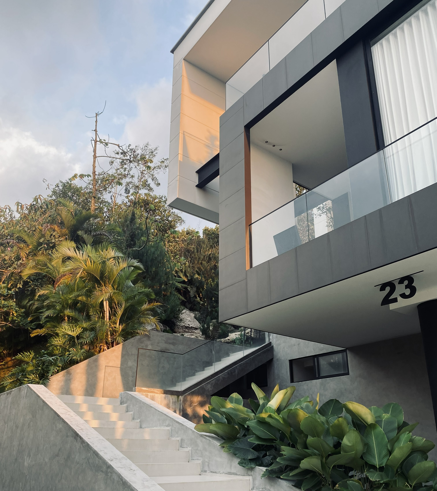

Tarde tendida
La luz baja en oblicuo y endurece la sombra contra el muro. El concreto se vuelve dorado por once minutos antes de apagarse
Ver fragmento →La luz baja. El ruido desaparece. Y el espacio vuelve a sentirse humano.
La arquitectura contemporánea aprendió a verse impecable. Superficies limpias. Luces blancas. Materiales costosos. Espacios diseñados para ser fotografiados antes que habitados. Y aun así algo falta.
Enough nace desde esa sensación. Desde el momento en que la tarde baja, el ruido desaparece y el espacio vuelve a sentirse presente. Nos interesan los lugares que todavía conservan silencio.
La sombra sobre el muro. La textura que cambia con la luz. La tensión entre vacío y permanencia. Esto no es un catálogo de perfección. Es un registro de atmósferas, objetos y espacios que todavía saben sentirse humanos.

La luz baja en oblicuo y endurece la sombra contra el muro. El concreto se vuelve dorado por once minutos antes de apagarse
Ver fragmento →
Una columna de luz cae desde el lucernario. El aire se vuelve material. La habitación contiene el día.
Ver fragmento →
La penumbra antes de la noche. El espacio se vuelve denso, lento. El cuerpo se queda más tiempo del previsto.
Ver fragmento →
La primera luz cruza el cuarto en oblicuo. El aire tiene temperatura. La pared retiene el frío de la noche.

La luz desciende limpia desde arriba. La habitación contiene el día. El cuerpo se quieta.

Once minutos antes de la noche. La materia se densifica. Quedarse cuesta menos que irse.
"Hay lugares que no necesitan imponerse para permanecer. Un muro atravesado por luz tenue. La densidad de una habitación en penumbra. El desgaste de una superficie que guarda tiempo."
Hecho para lectores, colaboradores y usuarios que quieran seguir el rastro de Enough con una entrada clara, sobria y directa.